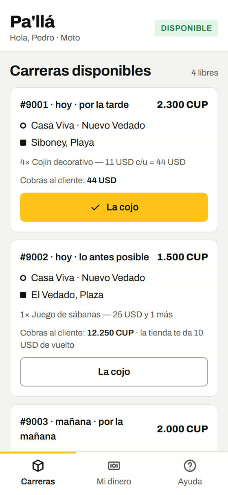
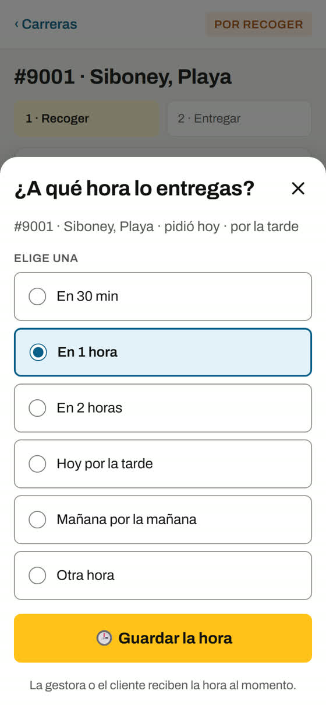
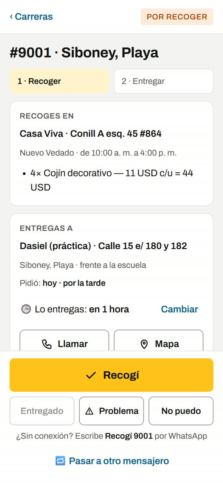
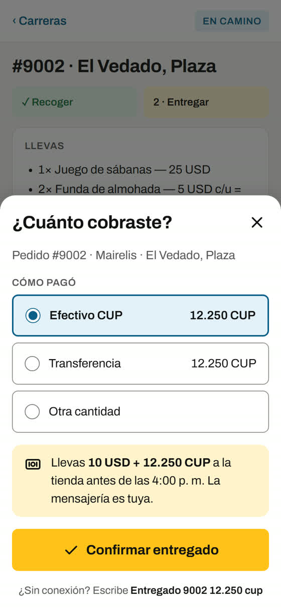
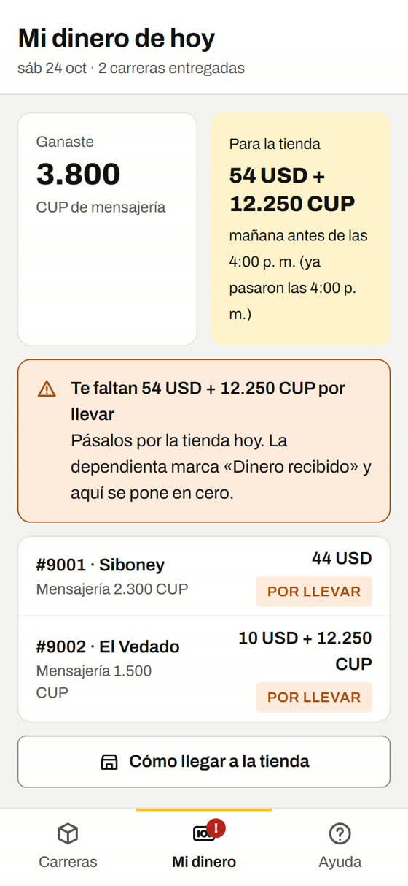
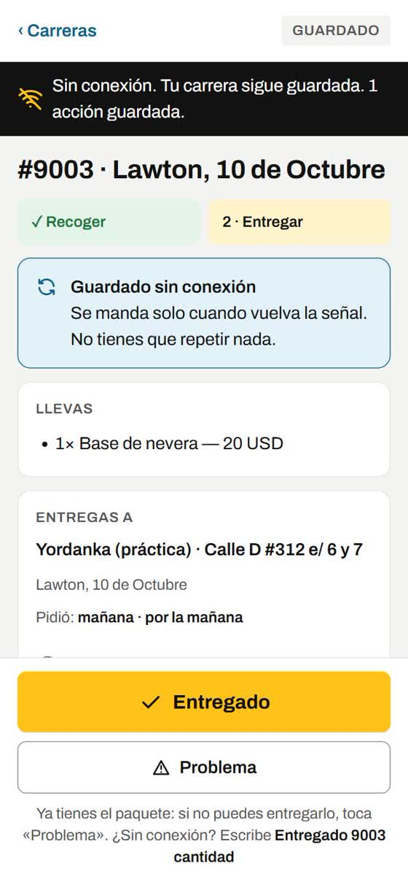
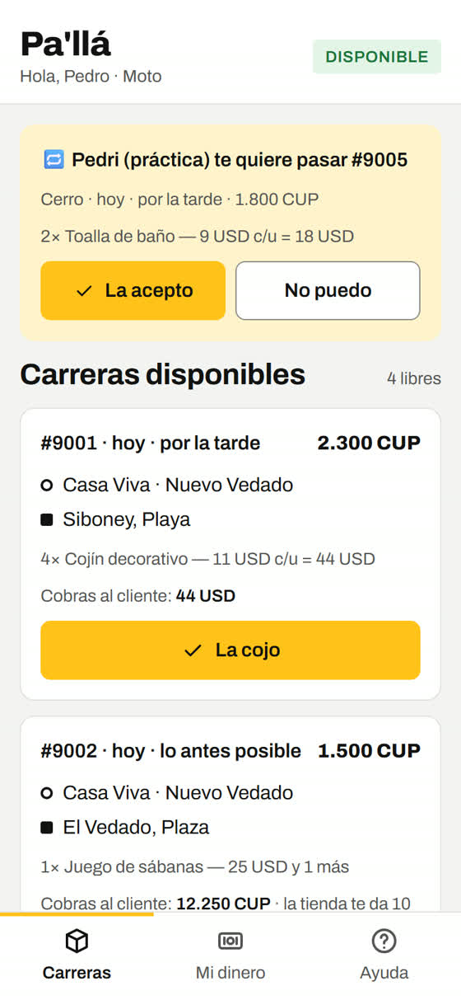

¿Te ha pasado?
El grupo de WhatsApp sirve para repartir, pero se enreda
- Dijiste «Yo» y no te la contaron, o se la dieron a otro.
- Escribiste «entregado» y no se apuntó. Te lo volvieron a preguntar.
- No sabías cuánto llevar a la tienda con el vuelto sumado.
- Se fue la señal en medio de la carrera y nadie supo nada.
- Quisiste pasarle la carrera a un compañero y se lió.
Cómo funciona
Una carrera en 6 toques
1Ves las carreras libres y tocas «La cojo»
Lo mismo que el «Yo» del grupo: el primero que toca, gana. Ves de dónde a dónde, cuánto ganas y cuánto cobras al cliente antes de cogerla.

2Dices a qué hora la entregas
Eliges «en 1 hora», «hoy por la tarde» u otra hora. La gestora o el cliente se enteran solos: nadie te escribe para preguntarte.

3Todo de tu carrera en una pantalla
Dónde recoges, a quién entregas, Llamar y Mapa con un toque. Al recoger tocas «Recogí» y la tienda lo ve.

4«Entregado» y te dice cuánto llevas
Marcas cómo pagó el cliente y la app te dice exacto cuánto llevar a la tienda, con el vuelto ya sumado. Se acabaron las cuentas a mano.

5Tu dinero del día, siempre claro
Cuánto ganaste de mensajería y cuánto debes a la tienda. Cuando la dependienta marca «Dinero recibido», se pone en cero.

6¿Se fue la señal? Sigue trabajando
Lo que toques sin señal queda guardado y se manda solo cuando vuelve. No tienes que repetir nada.

Y además
Pasar una carrera sin líos
¿No puedes? Tocas «Pasar a otro mensajero», eliges al compañero y sigue siendo tuya hasta que él la acepte en su Pa'llá. Si alguien te pasa una a ti, te sale arriba con «La acepto».

Antes y ahora
Lo mismo, sin perder tiempo
Tranquilo
Lo que NO cambia
- La mensajería es tuya, igual que siempre.
- El grupo de Mensajerías sigue funcionando.
- Si un día la app no carga, escribes al WhatsApp de Casa Viva como siempre.
- No hay contraseña: entras con tu enlace personal.
Preguntas
¿Cuesta algo?
No. Es gratis para los mensajeros de Casa Viva.
¿Gasta muchos datos?
Muy pocos. Se guarda en el teléfono y solo baja lo nuevo.
¿Cómo entro?
Con tu enlace personal. Es solo tuyo: no lo pases a nadie. Se abre con Chrome y, si te sale «Instalar» o «Añadir a pantalla de inicio», le das y te queda como una app.
¿Y si pierdo el teléfono?
Avisas a la tienda y anula tu enlace al momento. Te dan uno nuevo.
¿Y si me equivoco?
Toca «Problema» y la tienda lo ve al instante. Antes de recoger también puedes tocar «No puedo» y la carrera vuelve a quedar libre.
Pruébala hoy. No pierdes nada.
Entra en la práctica, coge una carrera inventada y entrégala. En 5 minutos sabes usarla.
Abrir la práctica¿Quieres usarla de verdad? Pídele tu enlace personal a la tienda. Estamos empezando con pocos mensajeros y vamos sumando.